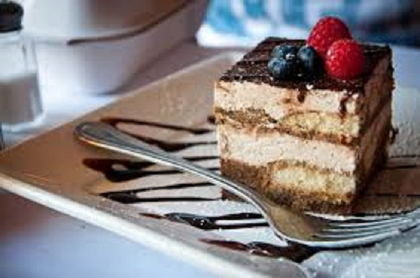

Dit gehaktbrood kan prima bij een avondmaaltijd, maar is ook een makkelijk gerecht voor een buffet.
ingrediënten
½ kopje sterke koffie
260 gram opgeklopte slagroom
250 gram mascarpone
1 theelepel vanillessuiker
scheutjes Baileys
Cacaopoeder
Paar blokjes pure chocolade
Benodigheden
2 kleine glaasjes
Rasp
Bereiding
Als je de sterke koffie net hebt gezet, laat hem dan even afkoelen. Roer de mascarpone samen met de vanillesuiker tot een glad geheel. Voeg dan al roerend beetje bij beetje de koffie en een scheutje Baileys toe. Spatel dan de slagroom erdoorheen. Neem 2 kleine glaasjes en schep een laagje van het mascarponemengsel erin, gevolgd door een dun laagje cacaopoeder. Herhaal dit tot het glaasje vol is. Eindig met het mascarponemengsel. Rasp de pure chocolade eroverheen en zet in de koelkast tot je het toetje serveert.

Tip lekker als het koud is. Lekker met een drankje er bij